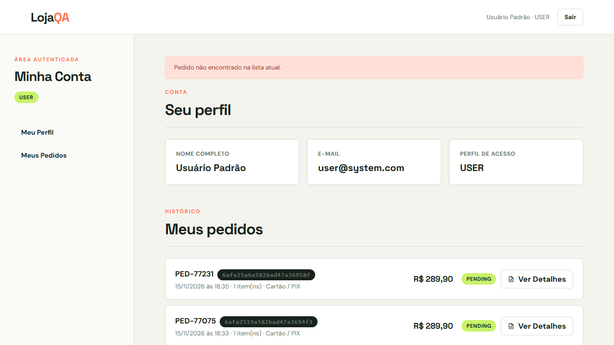
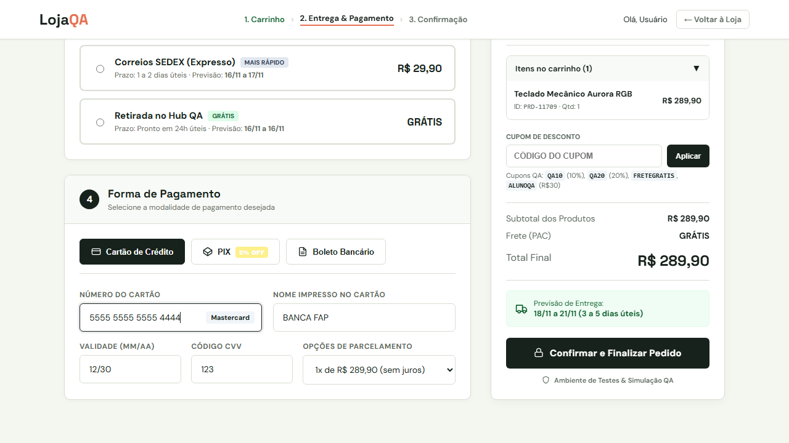
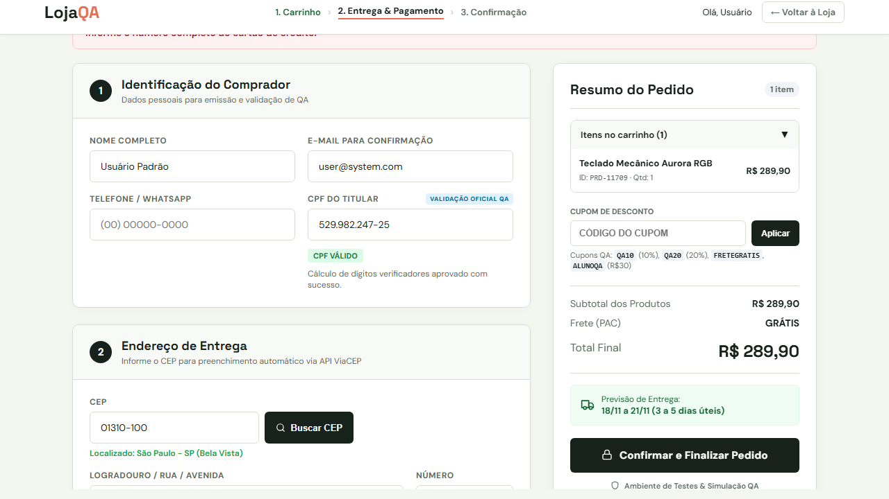
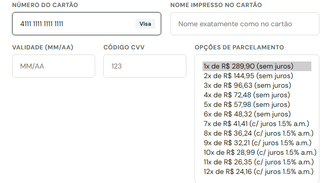
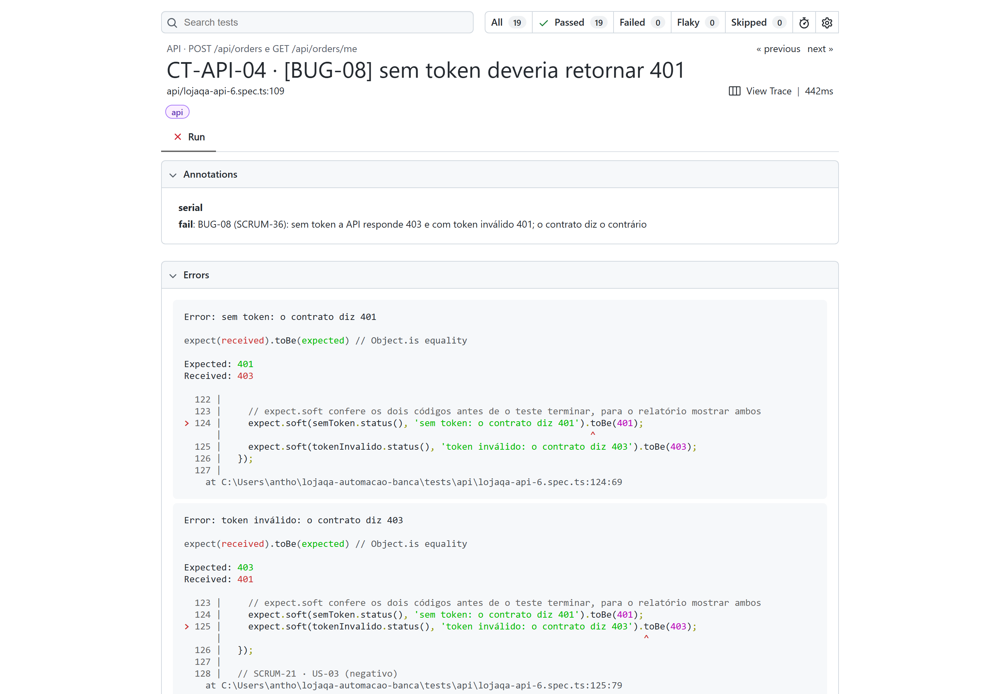

Anexo A · material de apoio
Para as perguntas
Evidências reais das execuções

CT-E2E-01 · BUG-06 e BUG-07Pedido criado; o painel avisa "não encontrado" e lista R$ 289,90

CT-E2E-02Bandeira Mastercard detectada e parcelas carregadas

CT-E2E-03"Informe o número completo do cartão de crédito."

BUG-027x de R$ 41,41 "c/ juros" = 289,90 ÷ 7

CT-API-04 · BUG-08Expected 401 · Received 403

CT-EXT-01SauceDemo: "Thank you for your order!"
LQA · BANCA 06 · ANEXOSA